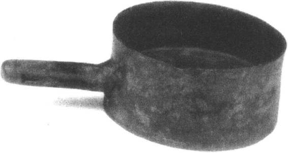
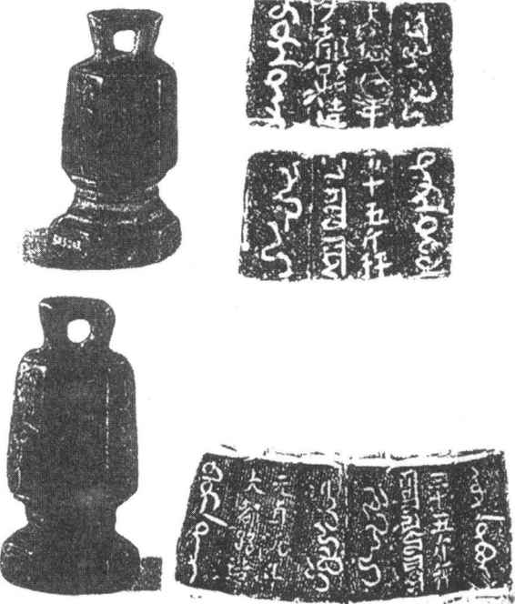

1271年元世祖忽必烈建立元朝。元立国后一般“仪文制度”也多“遵用汉法”。［107］承认和提倡汉文化，加强中央集权，大力发展经济，但是也必然会遭到来自守旧派贵族势力的抵制，在政治、经济、文化等方面不可避免地保留本民族的特点，度量衡也如此。
元代度量衡史籍少有记载。元尺及元量器一件也未见流传至今，许多问题还有待史料的发掘。但有一点是可以肯定的，即元尺如隋唐以来分大小制，天文历算用小尺。
元日常用尺之长，史无定说。明郎瑛《七修类稿》说：“元尺传闻至大，志无考焉”。可见，早在明代已无确切的考证了。史籍中虽可找到一些蛛丝马迹，皆为只言片语的推测。各家说法也不一致，对尺度长短的考订相差甚多，从31—45厘米不等。另一条渠道即从相关实物中作些推证。如《元典章》中有关于各级官印尺寸的规定，与所见官印实测数去推证，不失为一种可取做法。今得元代官印15方，测得各印边长之数，再与《元典章》之规定尺寸勘比，求得元尺之长在35厘米左右。［108］
元史对乐律用尺未及详述。推溯辽、金史可略见其承传关系。《辽史·乐志》云：“道宗大康中，诏行秬黍所定升斗，尝定律矣。其法大抵用古律焉。”［109］《金史·乐志》云：“今之钟磬虽崇宁之所制，亦周、隋、唐之乐也。”［110］《元史·天文志》云：“宋自靖康之乱，仪象之器尽归于金。元兴，定鼎于燕，其初袭用金旧。”［111］可知辽、金、元天文仪象制度亦仍承宋制。据考，今尚存河南登封县告城镇古观星台，是元代在周公测影台旧址上建造的，距今已近700年历史。《元史·天文志》记载：“圭表以石为之，长一百二十八尺，广四尺五寸，厚一尺四寸，座高二尺六寸。”［112］今测得石圭全长3119厘米，与《元史》所记圭尺长128尺折算，得元量天尺当今24.367厘米。与宋氏尺相近。
《元史·食货志》记：至元十九年“是年二月……其输米者，止用宋斗斛，盖以宋一石当今七斗故也”［113］。至元年间这项关于征收粮食所用量器的规定，是在南宋灭亡仅十几年时间。（图16—26）其所谓之“今”量，很可能是通行于原辽金地区的量器。俞正燮《癸已存稿》云：“元初用辽金斗。”［114］近年在辽墓中出土了一件铜量，器形具有“新莽嘉量”之遗风。铜量呈圆筒形有柄。器底在筒高的三分之二处。经实测，上部容1047毫升，下部容500毫升。［115］按《元史》宋1石当元7斗说，以宋1升约合700毫升，得元1升容约1000毫升。那么，此辽之铜量当是1升和2升合一的量器。［116］

图16-26 辽代嵩德宫铜量
与元尺和量器未见留存成显明对比的是，元代各种权大量出土，仅我们所见已超过三百余件。大多有实测数据可查。
元权自铭为“锤”。重量多在1—2斤之间，没有明显的倍比关系，其中数件自铭“××斤秤”、“××斤锤”。证明了它们都是杆秤上的游砣。
未见元代有关于权衡器制造、研究的记载，但从秤锤刻铭已说明是宋制的延续和发展。刘承珪在研制等秤的过程中，已对砣重、杆长、最大称量以及分度值都作了严格的规定。［117］元代杆秤正是在这一基础上向定量秤、定量砣方向发展的。从元秤锤自重与最大秤量的刻铭中反映出，其比值大多在4%—6%左右。说明杆秤发展到元代已基本定型，趋于成熟阶段。
元代度量衡器由省部制造颁降，再由各路总管府“照依省部元降样制成造，委本路管民达鲁花赤长官校勘相同，印烙讫，发下各处，公私一体行用”［118］。“达鲁花赤”意为“镇守者”，由蒙古人或色目人担任，以掌实权，元权上有刻铭“依省成造，校勘相同”。“汴梁路、达鲁花赤”可证。［119］《宋史·律历志》记：“凡遇改元，即差变法，各以年号印而识之……明制度而防伪滥也。”［120］仅所见元权铭文，从世祖立国之前的“中统”，到元末的“至正”，共16个年号中，唯缺仅用了不到一个月的“天顺”年号。元代恪守“改元必铸权”的古训，实际上也是以此向全国发布一项命令；度量衡器必须遵守官降之法物。
元代是一个疆域辽阔、经济开放并由少数民族掌管政权的朝代。为了便于在各民族乃至元朝势力范围之内的波斯地区以及西亚各国频繁的经济往来，当时已有畏兀儿、汉、梵、西夏、藏、蒙、突厥、叙利亚、波斯等17种文字的印刷品在中国广泛流通。元代铜权上有的除铸汉文外，还铸有八思巴文、回鹘蒙文和波斯文，正是经济发达、文化交流、对外开放的一种表现。（图16—27）

图16-27 元代铜权及铭文
求证元代权衡量值，除可以从定量秤锤上折算之外，还见金、元时期的定量银铤和两件金代砝码等实物，测每一器之重便可得一斤之值。虽有一定偏差，也属在所难免。经合理取舍得一斤约合640克。与唐宋相比略有下降。